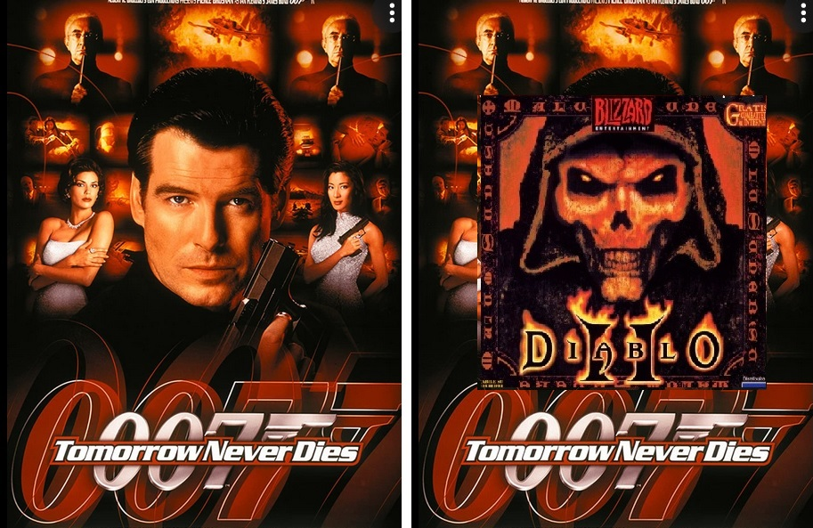

Welcome to D2 Never Dies Mod (d2nd)
A Diablo II Resurrected Mod

Theme song
The purpose of this mod is to provide sorely needed Quality of Life changes to Diablo 2 Ressurected, and providing a joyful Single Player experience for the casual gamer with only 3-6 hours of game time available during the week.
The mod has been balanced with Single Player Hardcore gaming in mind, and for the player who enjoys playing through the game, creating several characters and builds simultaneously. Most less-used skills and item types have been balanced and buffed to enable new builds and viable play styles.
In this mod you will find powerful rare items and craft even stronger items that can take you to endgame. You can also build and create your own unique items and set items once you venture further into the game and focus on specific builds.